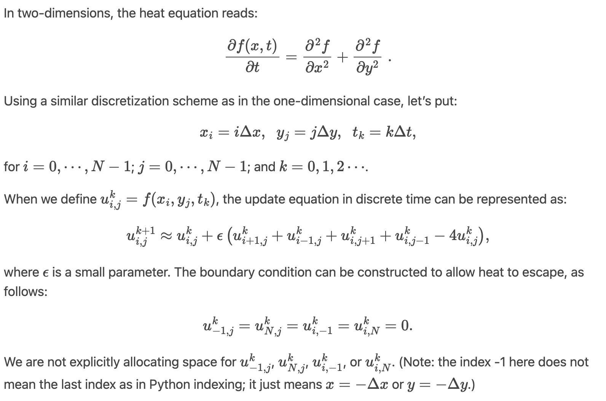
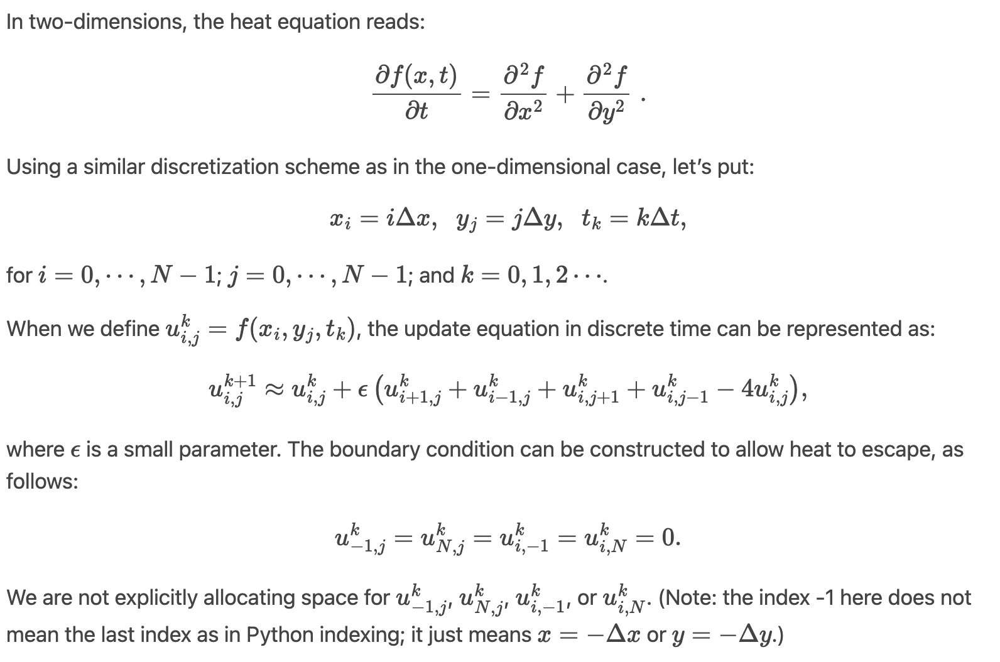
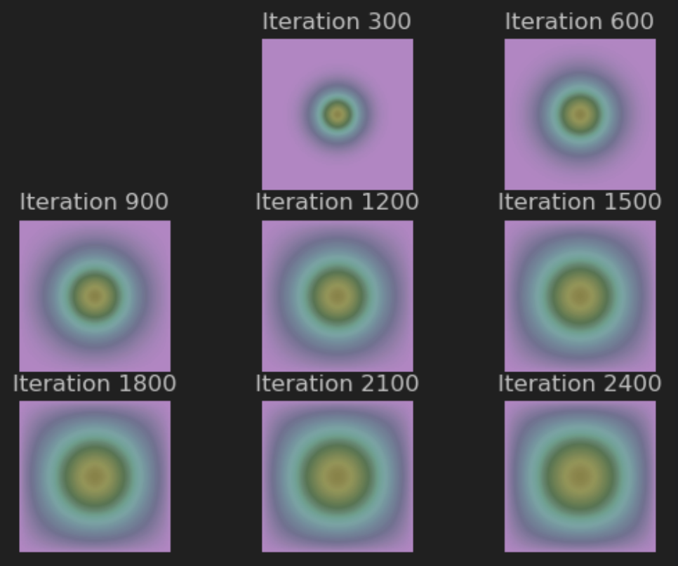
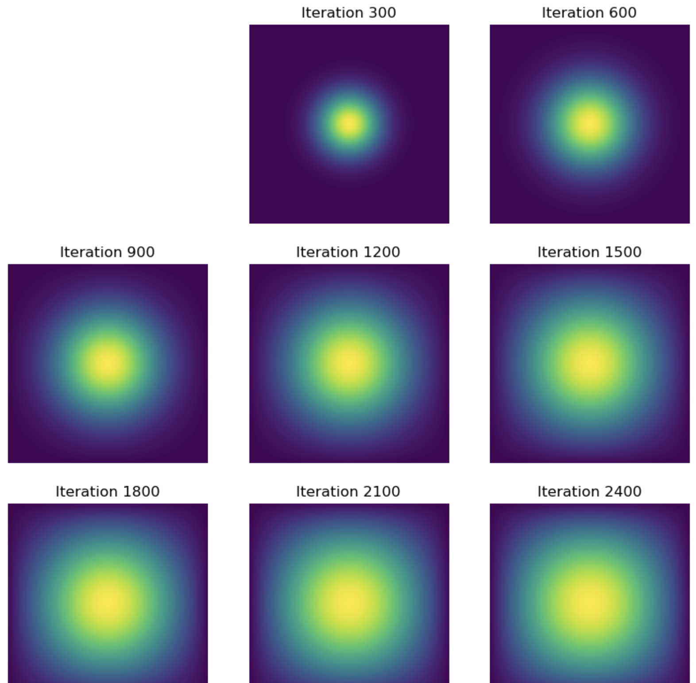
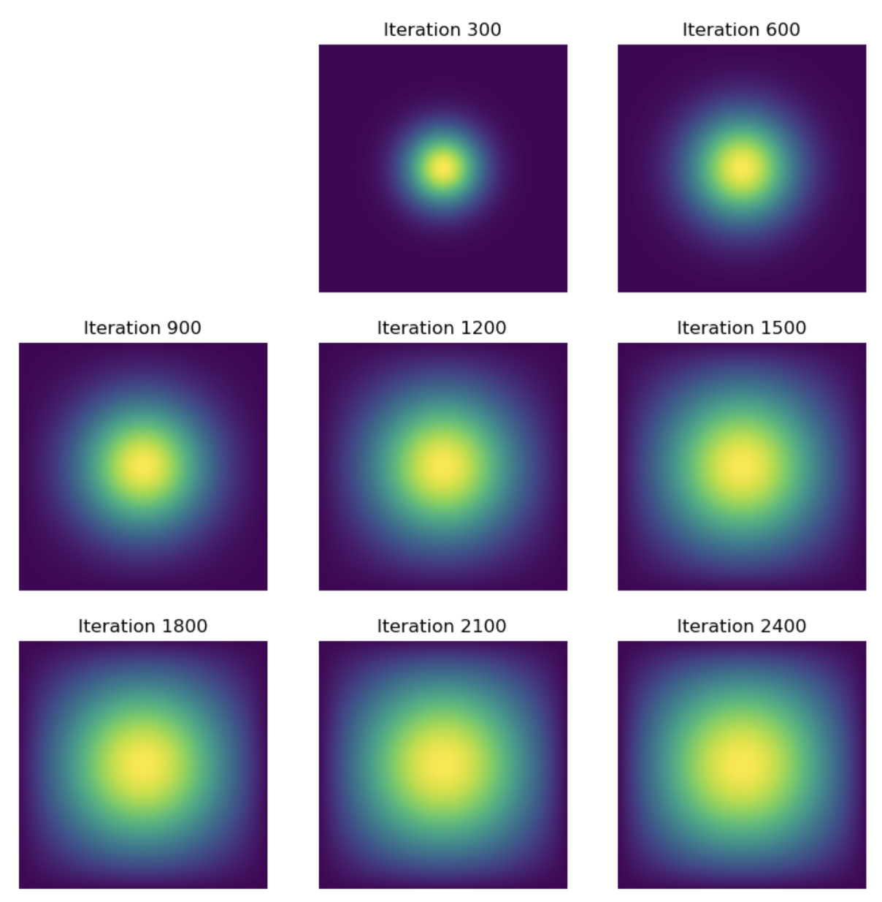

from IPython.display import Image
Image(filename='/Users/athena/Desktop/school/Winter2024/PIC16B/hw4.jpg')
In this project, I will be implementing the heat equation (see image below - credits to Professor Seyoon Ko UCLA PIC16B Winter 2024) through four different methods.
from IPython.display import Image
Image(filename='/Users/athena/Desktop/school/Winter2024/PIC16B/hw4.jpg')
First, we import the time module for the rest of the code project to keep track of runtime for different methods. Note that all the following methods are placed inside heat_equation.py.
import timeWe begin by importing the numpy and matplotlib modules. Then the first function is get_A(N) consisting of numpy arrays code that was provided by the professor. The returned A represents a 2D difference matrix \(N^2 x N^2\). The second function advance_time_matvecmul(A, u, epsilon) takes in A, u, and epsilon to perform matrix-vector multiplication. The first line (N = …) determines the size of the grid in one dimension, while the next (A @ u.flatten()) performs matrix-vector multiplication on flattened array, which then reshaped to 2D array to calculate the returning value u.
'''
PART ONE
'''
import numpy as np
from matplotlib import pyplot as plt
def get_A(N):
n = N * N
diagonals = [-4 * np.ones(n), np.ones(n - 1), np.ones(n - 1), np.ones(n - N), np.ones(n - N)]
diagonals[1][(N - 1)::N] = 0
diagonals[2][(N - 1)::N] = 0
A = np.diag(diagonals[0]) + np.diag(diagonals[1], 1) + np.diag(diagonals[2], -1) + np.diag(diagonals[3],
N) + np.diag(
diagonals[4], -N)
return A
def advance_time_matvecmul(A, u, epsilon):
"""Advances the simulation by one timestep, via matrix-vector multiplication
Args:
A: The 2d finite difference matrix, N^2 x N^2.
u: N x N grid state at timestep k.
epsilon: stability constant.
Returns:
N x N Grid state at timestep k+1.
"""
N = u.shape[0]
u = u + epsilon * (A @ u.flatten()).reshape((N, N))
return u
def visualize_heat(u, iteration):
plt.subplot(3, 3, iteration // 300 + 1)
plt.imshow(u)
plt.title(f'Iteration {iteration}')
plt.axis('off')
# Simulation parameters
N = 101
epsilon = 0.2
num_iterations = 2700
# Initial condition
u0 = np.zeros((N, N))
u0[int(N / 2), int(N / 2)] = 1.0
# Get the matrix A
A = get_A(N)
start_time = time.time()
# Run the simulation
intermediate_solutions = []
for iteration in range(1, num_iterations + 1):
u0 = advance_time_matvecmul(A, u0, epsilon)
if iteration % 300 == 0:
intermediate_solutions.append(u0.copy())
visualize_heat(u0, iteration)
end_time = time.time()
simulation_time = end_time - start_time
print("Simulation time:", simulation_time)The function visualize_heat basically calls the matplotlib package to display the plots according to the set iterations. Next, we initialize teh parameters N, epsilon, num_iterations, u0, and u0[int(N / 2), int(N / 2)].
Next, we get the A using get_A and initiate the time recording for the simulation. Then we run the simulation by appending to an empty list intermediate_solutions and using a for-loop to iterate (display graph for every 300 simulations).
Finally, we stop the runtime recording and print the simulation time. Note that this portion of code is repeated for all following methods with minor distinction in function name and parameter calling - it is primarily used to display the plot, run the simulation, and record the runtime.
RUNTIME: Executed at 2024.03.02 09:54:39 in 38s 69ms
from IPython.display import Image
Image(filename='/Users/athena/Desktop/part1.jpg')
In this method, we define the function get_sparse_A(N) that returns A_sp_matrix and a jit-ed version of advance_time_matvecmul called advance_time_sparse.
Similarly, we first import the jax and scipy modules. The first function get_sparse_A(N) does the following (going line by line): - n calculates the total number of elements in the matrix - constructs a list called diagonals, where each element is a diagnoal for A - set the values of certain diagonals elements to zero - offset for determining relative position to main diagonal (0 is main and positive is right, negative is left) - constructs A_sp_matrix using the diags function with diagonals list, offsets list, shape set to \(n * n\) and format to csr
The second function advance_time_sparse(A_data, A_indices, A_indptr, u, epsilon) does the following (going line by line): - N to find size of the matrix in 1D - flattens the 2D matrix u into a 1D array to prepare for sparse - parse matrix-vector multiplication using jnp.dot - broadcasts u_result to an array (same shape as u_reshaped) - reshape u_result to match the shape of u - calculate final u matrix
"""
PART TWO
"""
from jax import jit
from scipy.sparse import diags
def get_sparse_A(N):
n = N * N
diagonals = [-4 * np.ones(n), np.ones(n - 1), np.ones(n - 1), np.ones(n - N), np.ones(n - N)]
diagonals[1][(N - 1)::N] = 0
diagonals[2][(N - 1)::N] = 0
A_dense = jnp.diag(diagonals[0])+ jnp.diag(diagonals[1],1)+ jnp.diag(diagonals[2], -1) +jnp.diag(diagonals[3],N)+ jnp.diag(diagonals[4],-N)
A_sparse = sparse.BCOO.fromdense(A_dense)
return A_sparse
@jit
def advance_time_sparse(A, u, epsilon):
"""Advances the simulation by one timestep, via matrix-vector multiplication
Args:
A: 2d matrix N^2 x N^2
u: N x N grid state at timestep k.
epsilon: stability constant.
Returns:
N x N Grid state at timestep k+1.
"""
N = u.shape[0]
u = u + epsilon * (A @ u.flatten()).reshape((N, N))
return u
# Simulation parameters
N = 101
epsilon = 0.2
num_iterations = 2700
# Initial condition
u0 = np.zeros((N, N))
u0[int(N / 2), int(N / 2)] = 1.0
# Get the sparse matrix A
A = get_sparse_A(N)
# Run the simulation
intermediate_solutions_sparse = []
for iteration in range(1, num_iterations + 1):
u0 = advance_time_sparse(A_data, A_indices, A_indptr, u0, epsilon)
if iteration % 300 == 0:
intermediate_solutions_sparse.append(u0.copy())
visualize_heat(u0, iteration)
plt.show()
end_time = time.time()
simulation_time = end_time - start_time
print("Simulation time:", simulation_time)The rest of the code is basically the same as in method 1. However, notice how the sparse matrix A is converted to a format compatible with JAX by ensuring that both the indices and the indptr are int32 type.
RUNTIME: Executed at 2024.03.02 12:02:17 in 3.9s 315ms
from IPython.display import Image
Image(filename='/Users/athena/Desktop/part2.jpg')
In this method, we define the function advance_time_numpy(u, epsilon) that applies numpy features to tackle the same problem.
Similarly, we first import the numpy and matplotlib modules. The only changed function advance_time_numpy(u, epsilon) does the following (going line by line): - n to find the size of matrix in 1D - pads the matrix u using np.pad with a one-cell wide border of zeros - initializes a new matrix u_new with the same shape + data type as u, filled with zeros - iterates through each element of u (excluding the padding) - (code block) updates value for each element in u_new based on the finite difference equation
The rest of the code remains similar to method 1 and method 2 - displays plot in end and prints time.
"""
PART THREE
"""
import numpy as np
from matplotlib import pyplot as plt
def get_A(N):
n = N * N
diagonals = [-4 * np.ones(n), np.ones(n-1), np.ones(n-1), np.ones(n-N), np.ones(n-N)]
diagonals[1][(N-1)::N] = 0
diagonals[2][(N-1)::N] = 0
A = np.diag(diagonals[0]) + np.diag(diagonals[1], 1) + np.diag(diagonals[2], -1) + np.diag(diagonals[3], N) + np.diag(diagonals[4], -N)
return A
def advance_time_numpy(u, epsilon):
"""Advances the JAX simulation via NumPy operations
Args:
u: The grid state at timestep k.
epsilon: The stability constant.
Returns:
u_new: the updated grid state at time step k+1.
"""
n = u.shape[0]
u_padded = np.pad(u, 1, mode='constant')
u_new = np.zeros_like(u)
for i in range(1, n+1):
for j in range(1, n+1):
u_new[i-1, j-1] = u_padded[i, j] + epsilon * (
u_padded[i+1, j] + u_padded[i-1, j] +
u_padded[i, j+1] + u_padded[i, j-1] - 4 * u_padded[i, j]
)
return u_new
def visualize_heat(u, iteration):
plt.subplot(3, 3, iteration // 300 + 1)
plt.imshow(u)
plt.title(f'Iteration {iteration}')
plt.axis('off')
# Simulation parameters
N = 101
epsilon = 0.2
num_iterations = 2700
# Initial condition
u0 = np.zeros((N, N))
u0[int(N/2), int(N/2)] = 1.0
# Get the matrix A
A = get_A(N)
start_time = time.time()
# Run the simulation with numpy operations
u0 = np.zeros((N, N))
u0[int(N/2), int(N/2)] = 1.0
intermediate_solutions_numpy = []
for iteration in range(1, num_iterations + 1):
u0 = advance_time_numpy(u0, epsilon)
if iteration % 300 == 0:
intermediate_solutions_numpy.append(u0.copy())
# Visualize the diffusion of heat every 300 iterations using numpy operations
plt.figure(figsize=(10, 10))
for i, solution in enumerate(intermediate_solutions_numpy):
visualize_heat(solution, (i+1) * 300)
plt.show()
end_time = time.time()
simulation_time = end_time - start_time
print("Simulation time:", simulation_time)RUNTIME: Executed at 2024.03.02 15:50:22 in 376ms
from IPython.display import Image
Image(filename='/Users/athena/Desktop/part3.jpg')
In this method, we define the function advance_time_jax(u, epsilon) that uses JAX but not the sparse matrix multiplication method.
We begin by importing numpy, jax.numpy, jax, and matplotlib modules. The only changed function advance_time_jax(u, epsilon) does the following (going line by line): - n to find the size of matrix in 1D - pads the matrix u using np.pad with a one-cell wide border of zeros using jnp.pad - initializes a new matrix u_new with the same shape + data type as u, filled with zeros - iterates through each element of u (excluding the padding) - (code block) updates value for each element in u_new based on the finite difference equation - creates a mask array to check the indices where the u_new grid should be updated with update_value - uses jnp.where to update u_new where the mask is True
The rest of the code remains similar to method 1, 2, and 3 - displays plot in end and prints time.
"""
PART FOUR
"""
import numpy as np
import jax.numpy as jnp
from jax import jit
from matplotlib import pyplot as plt
def get_A(N):
n = N * N
diagonals = [-4 * np.ones(n), np.ones(n-1), np.ones(n-1), np.ones(n-N), np.ones(n-N)]
diagonals[1][(N-1)::N] = 0
diagonals[2][(N-1)::N] = 0
A = np.diag(diagonals[0]) + np.diag(diagonals[1], 1) + np.diag(diagonals[2], -1) + np.diag(diagonals[3], N) + np.diag(diagonals[4], -N)
return A
@jit
def advance_time_jax(u, epsilon):
n = u.shape[0]
u_padded = jnp.pad(u, 1, mode='constant', constant_values = 0)
laplacian_u = (jnp.roll(u_padded, 1, axis=0) + jnp.roll(u_padded, -1, axis=0) +
jnp.roll(u_padded, 1, axis=1) + jnp.roll(u_padded, -1, axis=1) -
4* u_padded)[1:-1, 1:-1]
u_new = u + epsilon * laplacian_u
return u_new
def visualize_heat(u, iteration):
plt.subplot(3, 3, iteration // 300 + 1)
plt.imshow(u)
plt.title(f'Iteration {iteration}')
plt.axis('off')
# Simulation parameters
N = 101
epsilon = 0.2
num_iterations = 2700
# Initial condition
u0 = np.zeros((N, N))
u0[int(N/2), int(N/2)] = 1.0
# Get the matrix A
A = get_A(N)
start_time = time.time()
# Run the simulation with jax
intermediate_solutions_jax = []
for iteration in range(1, num_iterations + 1):
u0 = advance_time_jax(u0, epsilon)
if iteration % 300 == 0:
intermediate_solutions_jax.append(u0.copy())
# Visualize the diffusion of heat every 300 iterations using jax
plt.figure(figsize=(10, 10))
for i, solution in enumerate(intermediate_solutions_jax):
visualize_heat(solution, (i+1) * 300)
plt.show()
end_time = time.time()
simulation_time = end_time - start_time
print("Simulation time:", simulation_time)RUNTIME: Executed at 2024.03.02 21:17:58 in 181ms
from IPython.display import Image
Image(filename='/Users/athena/Desktop/part4.jpg')
In conclusion, the last method was the fastest, while the numpy method was the easiest for me to write (perhaps due to personal experiences with numpy arrays and how numpy features are more intuitive).